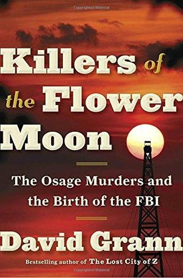

Discover Your Next Favorite Book!
Gilded Crown
Author:MARIANNE GORDON
Genre:SCIENCE FICTION & FANTASY
A richly imagined beginning that should not be missed.
A young woman is dragged from her quiet country life into the vicious, backstabbing world of politics and religion in this fantasy series opener.
Hellevir has always been different. When she was 10, she discovered the ability to travel into Death, the strange, liminal world ruled by a mysterious man in black. When she is 12, and her mother dies in childbirth, Hellevir travels to Death and offers the man in black a trade: If Hellevir gives up “something from life that is full of life” and a “blood gift” (in this case, one of her fingers), she will be able to return her mother to the world of the living.
Milandre, an old healer and Hellevir’s mentor, warns Hellevir to keep her gifts a secret. But when the queen brings her poisoned granddaughter’s corpse to Milandre’s doorstep, Hellevir can’t stop herself from bringing the young woman, Sullivain, back to life. Soon afterward, Hellevir receives a royal summons to move to the city and be ready to bring Sullivain back from the dead at a moment’s notice.
Only the man in black isn’t happy with Hellevir defying the laws of nature, and he requests a new kind of price if she wants to bring back any more lost souls without losing even more of herself. Gordon’s fantastic series opener paints the world of Rochidain with vivid detail, from its network of canals to the drunken parties of its nobles to the sinister state religion that has a strong hold on Hellevir’s mother. Hellevir’s complicated relationship with Sullivain, whose gratitude and attachment to Hellevir don’t stop her from threatening Hellevir’s family should she let Sullivain die, has more than enough substance to sustain the books to come.
A richly imagined beginning that shouldn’t be missed.
Rating: ★★★☆☆
Dog Day Afternoon
Author:David Rosenfelt
Genre:MYSTERY & DETECTIVE
Solid legal thrills from a master of the light touch. And the dog you’d forgotten about turns up to brighten the final scene.
A favor for his friend and associate Marcus Clark lands Paterson, New Jersey, attorney Andy Carpenter back in the courtroom for another impossible defense.
A man shows up at the offices of Moore Law and uses six bullets to kill six people, leaving only attorney Sally Montrose and paralegal Laura Schauble alive to identify him from his tattoo and distinctive footgear as handyman Nick Williams.
Even a tyro would realize that the murders are the work of a professional hit man, but lead prosecutor Richard Wallace is no tyro, and when the cops find the murder weapon in a trash bin a few blocks from Nick’s home with Nick’s fingerprint on it, he seems done for. Along the way, though, Marcus, who’s served as an informal mentor to Nick and his friend Rafe Duran, asks Andy to defend him. Much as he hates the practice of law, Andy can’t say no to Marcus, and he’s soon gathering evidence that will link the six killings—more will follow, since Andy has a habit of warning suspicious characters that they have only a day or so to fess up before he turns them in—to a complex series of insurance frauds whose basis turns out to be beautifully simple.
Andy jokes less than usual (a definite minus), presumably because the evidence against his client is overwhelming, but the international intrigue behind so many of his recent cases is mercifully absent here (a definite plus).
Rating: ★★★★☆
Deep water
Author:JAMES BRADLEY
Genre:Non Fiction
A satisfying tribute to the wonders of the ocean and the myriad dangers it faces.
A novelist, activist, and naturalist writes a paean to the sea.
Bradley, editor of The Penguin Book of the Ocean, reminds readers that we live on a planet whose surface is mostly water. “We spend the first nine months of our lives suspended in the liquid of the womb; once we emerge our tissues are made of water, our blood salt as the sea,” he writes.
With a nod to Rachel Carson, who also wrote about “the ocean’s mysteries” and “the way its meanings haunt and elude us,” Bradley brings the science up to date with the latest findings of oceanographers and biologists. He begins with a history of the Earth; soon after the planet cooled, water appeared.
Bradley delivers a vivid, expert education on the ocean’s makeup and behavior, including valuable information on currents, tides, sea creatures, reefs, glaciers and sea ice, abyssal depths (amazingly rich in life), beaches, and resource extraction, with an emphasis on the heavy hand of human exploitation. In the 20th century, scientists mourned species extinction and disappearing forests, but the current century’s onslaught of climate change, massive chemical and plastic pollution, and technology that literally vacuums up life from the ocean and ores from its floor means that many modern natural histories—Bradley’s included—deliver as much pain as pleasure.
Human cultures barely disturbed the ocean until technology from Western Europe exploded across the world after the Middle Ages, followed by the industrial revolution. While historians do not ignore the despicable international slave trade, colonialism, and racism that followed, Bradley devotes more space than the average natural historian. His warnings about the mass human disaster already in progress, including continued warming and rising sea levels, are more focused, though equally disturbing.
Rating: ★★★★☆
This Fierce People
Author:ALLEN PENN CRAWFORD
Genre:History
A clear, coherent, and even suspenseful account of the American Revolution.
Avivid re-creation of the Revolutionary War in the American South, a guerrilla-style conflict that paved the way for the British surrender at Yorktown.
In this intriguing work of military and social history, Crawford, author of Unwise Passions, argues convincingly that the South was where “the most decisive battles…were fought.” The author mines the historical record to show that the Southern conflict was an exceedingly violent version of a guerrilla war, one that pitted loyalists against revolutionaries at every level of Southern society.
Gen. Nathanael Greene, taking command of the American side after some near-catastrophic losses, understood “that he had stepped into what a later generation would also call a civil war. Neighbors were killing each other with horrifying regularity.” On the field of battle, conditions were punishing. Infectious diseases and starvation stalked the soldiers as both sides employed scorched-earth tactics and fought bitterly to hold their ground in South and North Carolina. Many Americans barely remember learning about the siege of Charleston and the battles of Camden, Kings Mountain, and Cowpens, but these were crucial to the eventual victory at Yorktown.
There were some heroes, such as Johann von Robais, a superb German military officer who died fighting for the Americans, but there were cruel and opportunistic officers on both sides: the “coldblooded and ruthless” British officer Banastre Tarleton and American officer Thomas Sumter, who authorized his troops to pay themselves by plundering property, which included enslaved people. Crawford follows the revolutionaries in their quest to cut off British supply lines from the coast to the backcountry. The author could have strengthened his superior account with more attention to the loyalists’ point of view. Nonetheless, he provides a clear picture of the stark cost of American independence on both sides of the conflict.
Rating: ★★★★☆

KILLERS OF THE FLOWER MOON
Author:DAVID GRANN
Genre:Non Fiction
Dogged original research and superb narrative skills come together in this gripping account of pitiless evil.
Greed, depravity, and serial murder in 1920s Oklahoma.
During that time, enrolled members of the Osage Indian nation were among the wealthiest people per capita in the world. The rich oil fields beneath their reservation brought millions of dollars into the tribe annually, distributed to tribal members holding "headrights" that could not be bought or sold but only inherited.
This vast wealth attracted the attention of unscrupulous whites who found ways to divert it to themselves by marrying Osage women or by having Osage declared legally incompetent so the whites could fleece them through the administration of their estates. For some, however, these deceptive tactics were not enough, and a plague of violent death—by shooting, poison, orchestrated automobile accident, and bombing—began to decimate the Osage in what they came to call the "Reign of Terror." Corrupt and incompetent law enforcement and judicial systems ensured that the perpetrators were never found or punished until the young J. Edgar Hoover saw cracking these cases as a means of burnishing the reputation of the newly professionalized FBI.
Bestselling New Yorker staff writer Grann (The Devil and Sherlock Holmes: Tales of Murder, Madness, and Obsession, 2010, etc.) follows Special Agent Tom White and his assistants as they track the killers of one extended Osage family through a closed local culture of greed, bigotry, and lies in pursuit of protection for the survivors and justice for the dead. But he doesn't stop there; relying almost entirely on primary and unpublished sources, the author goes on to expose a web of conspiracy and corruption that extended far wider than even the FBI ever suspected. This page-turner surges forward with the pacing of a true-crime thriller, elevated by Grann's crisp and evocative prose and enhanced by dozens of period photographs.
Rating: ★★☆☆☆
SILENCE
Author:JULIA PARK TRACEY
Genre:Fiction
A historically astute and compelling must-read.
Silence Marsh is sentenced to a year of silence.
Silence was recently married to a good, loving man, Constable David Marsh, whose rank gave her the title of “Mistress,” rather than the more common “Goodwife,” and she has a kind and prosperous extended family.
However, within a six-month span, her mother, her husband, and her infant daughter all die. At a Sabbath meeting, while listening to a typical Puritan fire-and-brimstone sermon, she loses her composure—screaming and cursing a seemingly capricious God who chose to punish her with such tragedy. For this sacrilege, she receives several punishments, with the final one being that she must not speak for a calendar year; to further atone, she voluntarily refuses even to write messages.
From here on, the story focuses on Silence’s personal struggle with her conscience; however, she does still have friends, including a talented Boston apothecary, Mrs. Greenleaf, who looks after Silence’s failing health. So does the apothecary’s son, Daniel Greenleaf, who recently graduated from Harvard with a medical degree and does wonders for “Mistress Tacit,” as he teasingly calls Silence. Young Zuriel Hobart, who’s badly abused by her stepmother and desperate for a friend, becomes Silence’s protégé in the household arts. It all comes to a head when Zuriel accuses her truly wicked stepmother of witchcraft—a situation that drags Silence in and tests her mettle.
Readers will be likely be shaken and enraged by the final scenes. Tracey, the author of The Bereaved (2023), is a remarkable writer, and this book is another triumph. The character of Silence is a wonderful creation who endures a life suffering, doubt, and blazing anger, and readers will be invested in her fate. The archaic language and fine detail relate what it was like to live in a typical household of the time, all the household practices of everyday life, and how, for example, to prepare for long winters: “Withal, the apples have been cut and dried, the apple-butter crocked, the cider pressed. Crane-berries and wild grape are gathered and dried.”